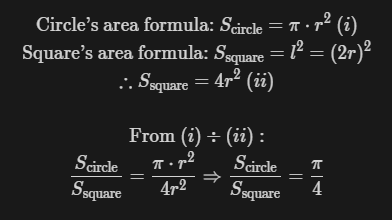

True pi value:
Current Approximation:
Value comparison:
This program has the idea of rounding the value of pi, through the circle's and square's areas. For this to be possible, some predefitions are needed:
Having those topics out of the way, we can carry on to the calculations:
Finally, since both circle's and square's areas are approximated by the ammount the dots printed in the canvas, we can already compute pi! To do so, we divide the circle's area by the square's areas and multiply this result by 4, obtaining PI!!!